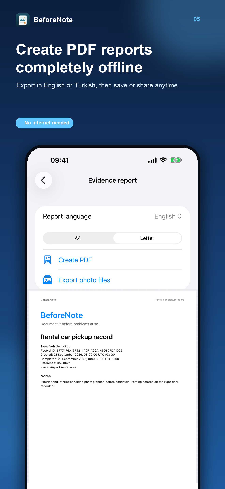

PHOTO RECORDS FOR REAL LIFE
Document it before problems arise.
BeforeNote helps you make a clear photo record of a rental car, home, delivery or handover while the details are fresh.
iPhone · One-time purchase · No account or subscription

A SIMPLE WORKFLOW
A record you can finish in minutes
Choose a guide
Start with a suggested photo checklist or create your own record.
Capture the details
Add photos, captions and a general note in one organised place.
Export a PDF
Complete the record and create a shareable report, even offline.
BUILT FOR PEACE OF MIND
Your records stay on your device
BeforeNote needs no account, ads, analytics, backend or cloud sync. You choose when to share a PDF or export stored photo files.
BeforeNote records device time and available file metadata. It does not independently verify when or where a photo was taken or guarantee acceptance in a dispute.

Have a rental pickup coming up?
Use the rental car photo checklist before leaving the desk.
Get BeforeNote for iPhone